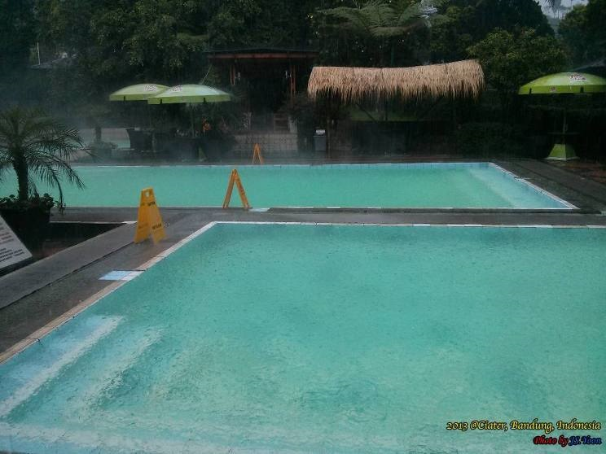
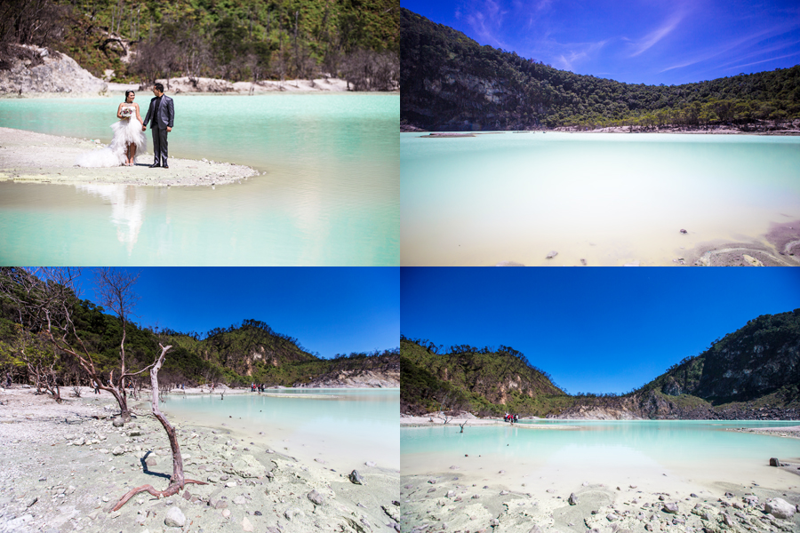

관광지
 |
 |
 |
반둥
반둥 시는 인도네시아 자와 섬 서쪽에 있는 서부자와주의 주도이다. 인도네시아에서 3번째로 큰 도시이며 수라바야 다음으로 많은 인구가 거주하고 있는 대도시이다.
반둥시의 주변을 둘러싸고 있는 땅꾸반 화산에서 뿜어져 나온 화산재가 충적되어 평야를 이룬 지역으로, 도시 전체가 평지를 이루고 있다.
최근에 반둥은 쇼핑의 도시로 알려지고 있는데, 소위 말하는 몰과 아울렛이 도시 곳곳에 생겨 나고 있다.
추천하는 여행지
|
 |
1. 땅꾸반 프라후는 표고 2,096m에 거대한 분화구를 자랑하는 서부 자와 최대의 화산이다. 아래 작은 분화구에도 내려가 볼 수 있으며, 분화구 근처에서 계란도 삶아볼 수 있다. 등산로 입구에서 정상까지 4km정도 되는 삼릭욕을 하면서 걸어야 한다.
2. 찌아뜨르는 화산 등산로 입구를 지나면 광활한 차밭이 펼쳐지는데, 북쪽으로 온천 증기가 보이는 곳이 짜아뜨르 입니다. 찌아뜨르 온천마을에서는 방갈로부터 호텔까지 다양한 숙박시설이 있다.
3. 까와뿌띠는 2430m 산정에 위치하며 에메랄드 빛 호수로 유명한 까와뿌띠는 하얀 분화구라는 뜻을 가지고 있는데, 분화구에 고인 옥색 물빛이 아름다운 풍경을 보여주고, 산화 정도에 따라 시시각각으로 물 색깔이 바뀌게 된다.